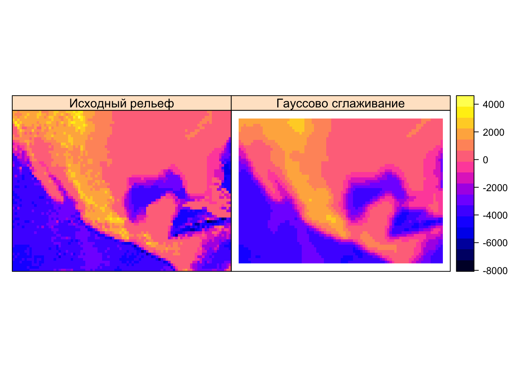
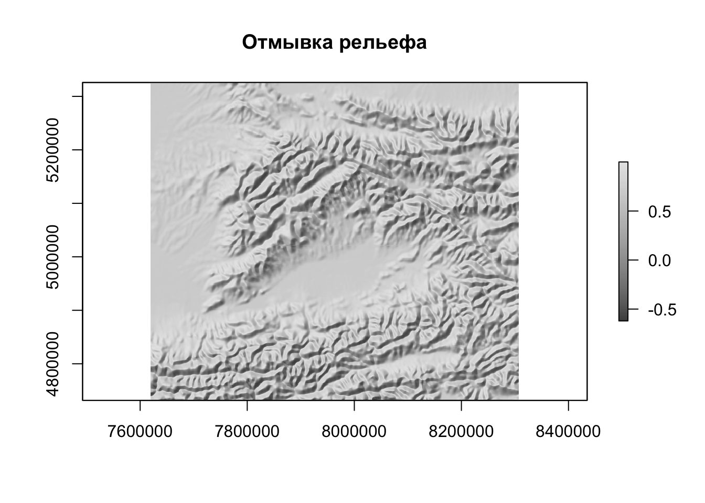

Глава 10 Пространственный анализ 2. Растровые методы
10.1 Введение
Растровая модель данных представляет собой мощный инструмент абстракции пространственных распределений и выполнения пространственного анализа. На первый взгляд, растр обладает целым рядом ограничений по сравнению с векторной моделью: не позволяет оперировать отдельными объектами, их границами и так далее. Растровые карты и снимки мы часто оцифровываем, выделяя объекты, чтобы на основе них можно было что-то посчитать. Самые первые ГИС были исключительно растровыми, что сейчас воспринимается как архаизм.
Однако за ширмой ограниченности растровой модели кроются огромные аналитические возможности. Растровая модель обладает внутренней топологией: ее ячейки соприкасаются друг с другом, что позволяет моделировать непрерывные в пространстве и динамические явления (при которых происходит перемещение вещества, энергии или информации в пространстве). Поскольку ячейки растра имеют одинаковый размер, к ним можно применять однотипные операции, которые будут давать предсказуемый результат вне зависимости от конкретной локации в пределах растра. Это также позволяет сделать обработку растра очень быстро.
Существует классификация операций растрового анализа, введенная американским профессором Даной Томлином, которая объединяет их под общим названием “алгебра карт” или “растровая алгебра”7. Предполагая, что обработке подвергается каждая ячейка растра, данная классификация разделяет все операции по охвату относительно текущей ячейки
- Локальные — анализируется одна ячейка растра или совпадающие в пространстве ячейки нескольких растров
- Фокальные — анализируются все ячейки в окрестности. Окрестность может быть как фиксированной, так и расширенной (expanded), когда ее размер управляется внешними факторами, например множеством объектов, до которых требуется вычислить расстояние. Информация по соседним ячейкам может быть как из исходного растра, так и из внешнего. Фокальные методы алгебры карт также называются методами анализа соседства.
- Зональные — анализируются все ячейки в пределах зон, определяемых извне (например, вторым растровым слоем).
- Глобальные — анализируются все ячейки растра.
10.2 Локальные операции
Локальные операции связаны с алгебраическими преобразованиями значений в ячейках. Например, цифровую модель высот в футах можно перевести в цифровую модель высот в метрах. Для этого нужно значение в каждой ячейке умножить на \(0.3048\). В локальных операциях могут участвовать несколько растров. Например, если у нас есть растровые поверхности плотности населения за разные года, мы можем вычесть одну поверхность из другой, чтобы получить поверхность изменений плотности, выяснить где она увеличилась, уменьшилась или осталось прежней. К локальным операциям относится также оверлей растров, при котором получается взвешенная сумма значений по нескольким растрам. И в том и в другом случае анализируются ячейки с нескольких растров, которые совпадают в пространстве.
В качестве примера определим мощность покровного оледенения в Антарктике и Гренландии, путем вычитание двух моделей ETOPO1, одна из которых показывает рельеф коренных пород (bedrock), а вторая — видимый рельеф поверхности (ice surface):
library(sp)
## Загрузка требуемого пакета: methods
library(sf)
## Linking to GEOS 3.6.1, GDAL 2.1.3, proj.4 4.9.3
library(raster)
library(classInt)
# ЛОКАЛЬНЫЕ ОПЕРАЦИИ
# Вычисление толщины покровного оледенения
# Чтение данных
bed <- raster('etopo1_bed.tif')
ice <- raster('etopo1_ice.tif')
countries <- st_read('countries.gpkg')
## Reading layer `admin_0_map_units' from data source `/Volumes/Data/GitHub/r-geo-course/data/countries.gpkg' using driver `GPKG'
## Simple feature collection with 183 features and 72 fields
## geometry type: MULTIPOLYGON
## dimension: XY
## bbox: xmin: -180 ymin: -90 xmax: 180 ymax: 83.64513
## epsg (SRID): 4326
## proj4string: +proj=longlat +datum=WGS84 +no_defs
borders <- countries %>% st_geometry()
# отображение данных
classes <- classIntervals(values(bed), 20)
brks <- classes$brks
nclass <- length(brks) - 1
plot(bed,
breaks = brks,
col = gray.colors(nclass),
main = 'ETOPO Bedrock',
legend = F)

# вычисление разности
ice.depth <- ice - bed
plot(ice.depth,
col = cm.colors(255),
main = 'Мощность покровного оледенения')
plot(borders,
border = 'black',
lwd = 0.5,
add = TRUE)
# сделаем пустыми все ячейки, в которых толщина льда равна нулю
ice.depth[ice.depth == 0] <- NA
plot(ice.depth,
col = cm.colors(255),
main = 'Мощность покровного оледенения')
plot(borders,
border = 'black',
lwd = 0.5,
add = TRUE)
10.3 Фокальные операции
В фокальных операциях участвует не только сама ячейка или совпадающие с ней ячейки других растров, но также ячейки, находящиеся в некоторой окрестности (опять же, в одном или нескольких растрах одновременно). Данный вид анализа подразделяется на две категории: фокальный анализ с фиксированной окрестностью и с раширенной окрестностью.
10.3.1 Фиксированная окрестность
В общем случае фиксированна окрестность может иметь различную форму, однако наиболее часто используется квадратная окрестность размером \(3\times3\):

Виды растровых окрестностей. Темной точкой выделена анализируемая ячейка
Фокальные операции с фиксированной окрестностью — привычное дело в обработке изображений. Они работают по принципу “плавающего окна”. Выбранная окрестность (квадратная, круглая и т.д.) представляется в виде матрицы коэффициентов — так называемого ядра свёртки (convolution kernel). Далее эта матрица перемещается, позиционируясь последовательно над каждой ячейкой растра, и значение в этой ячейке заменяется на взвешенную сумму значений ячеек в окрестности, умноженных на соответствующие коэффициенты ядра свертки. Например, если ядро состоит из единиц, то будет посчитана обычная сумма.
С помощью фокального анализа можно выполнить сглаживание изображения, которое убирает из него мелкие детали (высокочастотные составляющие яркостного сигнала). В качестве такого изображения может быть цифровая модель рельефа или космический снимок. Чтобы выполнить сглаживание, коэффициенты должны быть такими, чтобы получаемая взвешенная сумма осредняла значения в соседних ячейках. Самый простой вариант — это рассчитать среднее арифметическое. В этом случае коэффиценты ядра свертки будут равны \(1/k\), где \(k\) — количество ячеек в окрестности. Для матрицы \(3\times3\) они будут равны, соответственно \(1/9\):

# Среднее
wgt <- matrix(c(1, 1, 1,
1, 1, 1,
1, 1, 1) / 9,
nrow = 3)
# на самом деле проще написать так:
# wgt <- matrix(1/9, 3, 3), но полная форма записана для наглядности
# выполним обработку ЦМР с помощью фокального фильтра
filtered <- focal(dem, w = wgt)
spplot(stack(dem, filtered),
names.attr=c('Исходный рельеф', 'Сглаживание средним'))
Более мягким эффектом сглаживания, который к тому же не нарушает дифференцируемость поверхности, является гауссово сглаживание. Коэффициенты в матрице Гаусса убывают от центральной ячейки к краям матрицы по закону Гаусса-Лапласа, что позволяет придать центральной ячейке более высокий вес по сравнению с ячейками, располагающимися на краю анализируемой окрестности:
# Гауссово (параметр 0.5 - это стандартное отклонение в единицах измерения растра)
wgt <- focalWeight(dem, 0.5, "Gauss")
filtered <- focal(dem, wgt)
spplot(stack(dem, filtered),
names.attr=c('Исходный рельеф', 'Гауссово сглаживание'))
Еще одна интересная область применения фильтрации — это обнаружение границ (change detection). Границы на изображении возникают в тех местах, где его яркость резко меняет свое значение (в одном или нескольких каналах). Например, на фотографии контур лица может быть распознан по перепаду яркости между его изображением и фоном (если он имеет существенно отличный цвет). Поскольку перепад яркости соответствует экстремальным значениям производной поверхности (отрицательным или положительным), его также можно определить путем фокального анализа, а затем отсечь ячейки растра, в которых значение этой производной по модулю превышает заданный порог (то есть, имеет необходимый контраст).
Рассмотрим, как можно выделить уступы континентального склона океана путем применения фильтра Собеля для выделения границ:
# Матрица Собеля:
wgt <- matrix(c(1, 2, 1,
0, 0, 0,
-1,-2,-1) / 4,
nrow=3)
filtered <- focal(dem, wgt)
# Это поверхность производных:
plot(filtered,
col = gray.colors(128),
main = 'Производная поверхности')
# Отберем все ячейки, обладающие высокими значениями производных
faults <- (filtered < -1500) | (filtered > 1500)
faults[faults == 0] <- NA
# Визуализируем результат
plot(dem,
col = rev(rainbow(20)),
main = 'Уступы континентального склона',
legend = FALSE)
plot(faults,
col = 'black',
legend = FALSE,
add = TRUE)
Еще один распространненый случай использования фокальных операций — это морфометрический анализ поверхностей. Квадратная окрестность \(3\times3\) вокруг каждой ячейки формирует локальную поверхность, производные которой дают представление об уклоне, экспозиции и прочих морфометрических параметрах. Их можно вычислить с помощью функции terrain() из пакета raster:

# углы наклона
slope <- terrain(dem, opt = 'slope', unit = 'degrees')
spplot(slope,
col.regions = heat.colors(20),
names.attr=c('Углы наклона'))
# экспозиция
aspect <- terrain(dem, opt = 'aspect', unit = 'degrees')
spplot(aspect,
col.regions = rainbow(20),
names.attr=c('Экспозиции склона'))
Вычисление производных поверхности позволяет не только исследовать рельеф, но также строить его изображения. Например, хорошо знакомую всем по картам аналитическую отмыку рельефа (hillshade). Яркость поверхности в этом способе изображения зависит от угла между направлением на источник освещения (откуда светит Солнце) и нормалью к поверхности. Нормаль можно вычислить как напрямую через производные поверхности, так и восстановить на основе значений угла наклона и экспозиции в точке, что и используется в пакете raster. Обратите внимание на то, что для того чтобы повысить наглядность (контрастность) изображения, мы умножаем высоты рельефа на 20. Это стандартная практика для мелкомасштабных карт:
# отмывка
slope2 <- terrain(dem * 20, opt = 'slope')
aspect2 <- terrain(dem * 20, opt = 'aspect')
# параметры angle и direction функции hillShade определяют азимут и высоту источника освещения:
hill <- hillShade(slope2, aspect2, angle = 45, direction = 315)
plot(hill,
col = gray.colors(128),
main = 'Отмывка рельефа')
10.3.2 Расширенная окрестность
Расширенность окрестности означает, что она определяется не фиксированным шаблоном, а условием, которое должно выполниться для того, чтобы анализ в ячейке считался выполненным. Типичный пример анализа на основе расширенной окрестности — это операции, основанные на вычислении расстояний на растровой матрице, такие как аллокация, опреление кратчайшего пути на поверхности сопростивления, и собственно, само вычисление расстояние.
В мелкомасштабных тематических атласах часто можно встретить карты доступности той или иной географической локации, которые в форме изолиний показывают время движения до ближайшего населенного пункта. Эти изолинии можно построить по растровой поверхности, в каждой ячейке которой зафиксировано расстояние до ближайшего населенного пункта.
Рассмотрим построение аналогичной поверхности на примере доступности станций метро (по расстоянию). Для этого нам понадобится представить растр в виде матрицы точек, рассчитать для этих точек расстояния до ближайших станций метро и присвоить эти значения выходному растру:
# Определение Евклидовых расстояний — расширенное соседство
# Чтение данных
roads <- st_read("roads.gpkg") # Дороги
## Reading layer `roads' from data source `/Volumes/Data/GitHub/r-geo-course/data/roads.gpkg' using driver `GPKG'
## Simple feature collection with 2213 features and 12 fields
## geometry type: MULTILINESTRING
## dimension: XY
## bbox: xmin: 410946.9 ymin: 6176676 xmax: 415890.8 ymax: 6181910
## epsg (SRID): 32637
## proj4string: +proj=utm +zone=37 +datum=WGS84 +units=m +no_defs
poi <- st_read("poi_point.gpkg") # Точки интереса
## Reading layer `poi_point' from data source `/Volumes/Data/GitHub/r-geo-course/data/poi_point.gpkg' using driver `GPKG'
## Simple feature collection with 6623 features and 9 fields
## geometry type: POINT
## dimension: XY
## bbox: xmin: 410947.3 ymin: 6176678 xmax: 415889.9 ymax: 6181909
## epsg (SRID): 32637
## proj4string: +proj=utm +zone=37 +datum=WGS84 +units=m +no_defs
rayons <- st_read("boundary_polygon.gpkg") # Границы районов
## Reading layer `boundary_polygon' from data source `/Volumes/Data/GitHub/r-geo-course/data/boundary_polygon.gpkg' using driver `GPKG'
## Simple feature collection with 11 features and 5 fields
## geometry type: MULTIPOLYGON
## dimension: XY
## bbox: xmin: 410946.9 ymin: 6176676 xmax: 415890.8 ymax: 6181910
## epsg (SRID): 32637
## proj4string: +proj=utm +zone=37 +datum=WGS84 +units=m +no_defs
stations <- st_read("metro_stations.gpkg") # Станции метро
## Reading layer `metro_stations' from data source `/Volumes/Data/GitHub/r-geo-course/data/metro_stations.gpkg' using driver `GPKG'
## Simple feature collection with 45 features and 3 fields
## geometry type: POINT
## dimension: XY
## bbox: xmin: 411007.5 ymin: 6176747 xmax: 415852.2 ymax: 6181892
## epsg (SRID): 32637
## proj4string: +proj=utm +zone=37 +datum=WGS84 +units=m +no_defs
water <- st_read("water_polygon.gpkg") # Водные объекты
## Reading layer `water_polygon' from data source `/Volumes/Data/GitHub/r-geo-course/data/water_polygon.gpkg' using driver `GPKG'
## Simple feature collection with 8 features and 7 fields
## geometry type: POLYGON
## dimension: XY
## bbox: xmin: 411595.6 ymin: 6176676 xmax: 415890.8 ymax: 6180765
## epsg (SRID): 32637
## proj4string: +proj=utm +zone=37 +datum=WGS84 +units=m +no_defs
# Создаем пустой растр с охватом, равным охвату станции
r <- raster(extent(stations), nrows = 200, ncols = 200)
# Конвертируем ячейки в точки
cells <- r %>% as("SpatialPoints") %>% st_as_sf() %>% st_set_crs(st_crs(stations))
# Вычисляем расстояния
d <- st_distance(stations, cells)
# Находим минимальное расстояние для каждой точки и заполняем
# полученными значениями текущее содержимое растра
r[] = apply(d, 2, min)
# Визуализируем результат
plot(r,
col = rev(heat.colors(100)),
main = 'Расстояние до ближайшей станции метро')
contour(r,
lwd = 0.5,
add= TRUE)
plot(water,
col = 'blue',
border = 'darkblue',
add = TRUE)
plot(roads,
lwd = 0.2,
col = 'black',
add = TRUE)
plot(stations,
pch = 20,
col = 'black',
add = TRUE)
10.4 Зональные операции
10.5 Глобальные операции
| Самсонов Т.Е. Визуализация и анализ географических данных на языке R. М.: Географический факультет МГУ, 2017. DOI: 10.5281/zenodo.901911 |
Tomlin, C Dana. 2012. GIS and Cartographic Modeling. Second edition. Redlands, California: ESRI Press↩